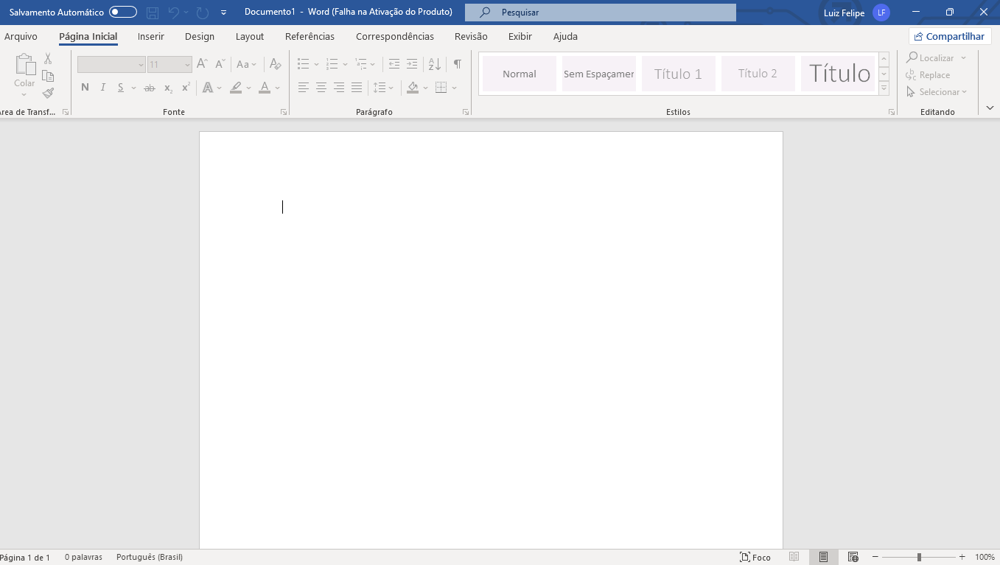

O Microsoft Word é um dos editores de texto mais utilizados no mundo. Ele permite criar, editar e formatar documentos de forma prática e eficiente. Com o Word, é possível produzir textos simples, como cartas e redações, até documentos mais complexos com tabelas, imagens, gráficos e referências. Além disso, oferece ferramentas de correção ortográfica, estilos de formatação, modelos prontos e recursos de acessibilidade. É amplamente utilizado em ambientes escolares, acadêmicos e profissionais, sendo essencial para a produção de conteúdos escritos com aparência organizada e profissional.
Um documento no Microsoft Word é um arquivo digital criado para organizar e apresentar informações por meio de texto, imagens, tabelas e outros elementos. Ele é utilizado para diversas finalidades, como redações escolares, relatórios profissionais, trabalhos acadêmicos, currículos, contratos e comunicados. O Word oferece uma grande variedade de ferramentas que facilitam a produção e a formatação desses documentos, como estilos de fonte, cores, margens, numeração de páginas, cabeçalhos e rodapés. Além disso, é possível inserir gráficos, links, comentários e até revisar o texto com correção ortográfica automática. O documento pode ser salvo em diferentes formatos, como .docx e .pdf, possibilitando o compartilhamento fácil e a impressão com qualidade. Dessa forma, o Word é uma ferramenta essencial para quem deseja criar conteúdos organizados, claros e com aparência profissional.
| Função | Descrição |
|---|---|
| Digitar e editar textos | Permite escrever, apagar ou modificar palavras no documento. |
| Formatar texto | Altera fonte, tamanho, cor, negrito, itálico, sublinhado etc. |
| Correção ortográfica | Corrige automaticamente erros de escrita e gramática. |
| Inserir imagens e tabelas | Adiciona elementos visuais ao conteúdo para enriquecer o documento. |
| Salvar e abrir arquivos | Grava o documento no computador e permite reabri-lo depois. |
| Imprimir | Envia o documento para a impressora com as configurações escolhidas. |
| Layout da página | Permite ajustar margens, orientação e tamanho do papel. |